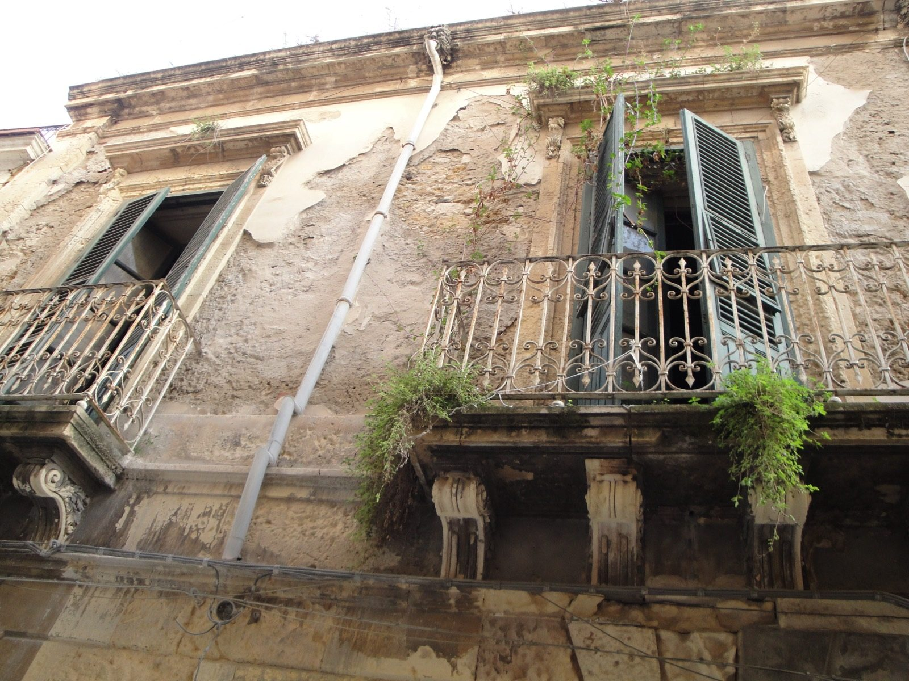

Kapitel 7 – I sydens fordærvende sol
I Taormina på Sicilien skal Ada komme til kræfter og Nolde fortsætte med at male. Begge lider de under solens nedbrydende indflydelse på menneskets moralske dømmekraft, som de med afsky iagttager rundt omkring sig. Efter nogle måneder rejser de desillusionerede nordpå, Ada til et sanatorium i Schweiz, Nolde til Als.